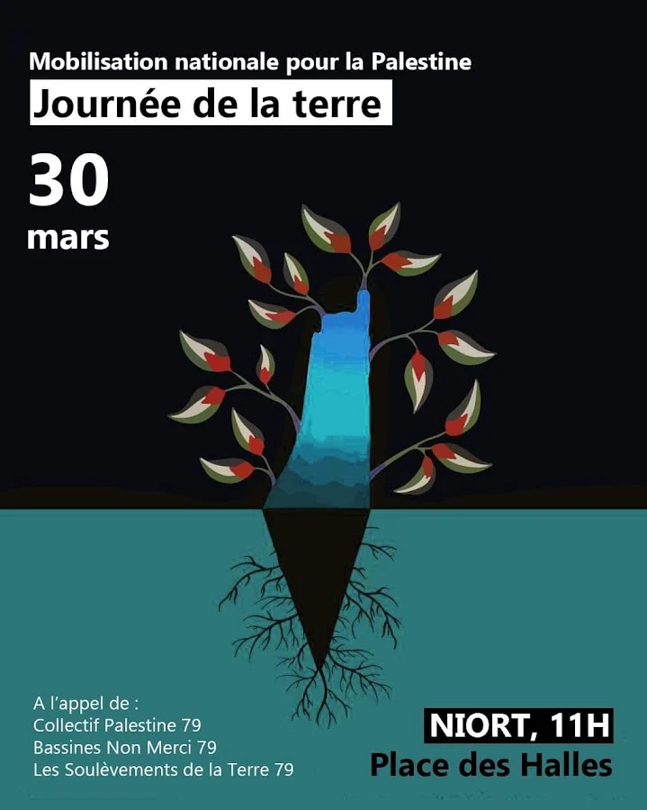

Prise de position fédérale
Gaza. Le PCF 79 demande le respect de la résolution de l’ONU
Date indiquée par Facebook · 28 mars 2024
Repères éditoriaux
Le 25 mars 2024, le Conseil de sécurité a adopté la résolution 2728. Notre publication demande son application et relaie le rendez-vous de la Journée de la Terre du 30 mars à Niort.
Texte conservé avec la publication
Israël / Palestine : la résolution de l’ONU doit être respectée
Le Conseil de sécurité de l’ONU vient d’adopter une résolution appelant à un cessez-le-feu immédiat jusqu’à la fin du Ramadan à Gaza et à la libération des otages détenus par le Hamas depuis l’opération terroriste du 7 octobre. L’abstention du gouvernement des Etats-Unis montre l’ampleur de l’isolement du gouvernement d’extrême-droite de Benyamin Netanyahou.
Il aura fallu plus de 30 000 morts, un début de famine et d’épidémies, 1,5 million de déplacés et des massacres de masse à Gaza, provoqués par le gouvernement israélien, pour y parvenir. Cela démontre à quel point la politique du deux poids, deux mesures est ancrée au sein des puissances occidentales, Etats-Unis en tête.
Pour autant, le vote de cette résolution donne un appui diplomatique crucial aux nécessaires initiatives pour la paix, pour un cessez-le-feu permanent. Elle doit être appliquée. La France et l’UE doivent faire pression sur le gouvernement de l’Etat d’Israël et sur le Hamas pour qu’ils s’y conforment.
Il est temps d’augmenter la pression politique et diplomatique sur le gouvernement de B. Netanyahou en reconnaissant l’Etat de Palestine, dans les frontières de 1967, aux côtés de l’Etat d’Israël, en arrêtant toute exportation d’armes vers Israël et en suspendant l’accord d’association UE-Israël tant que le gouvernement israélien ne se conforme pas au droit international. La France doit agir dans ce sens.
Le PCF participera à la manifestation du samedi 30 mars, organisée à l'occasion de la journée de la Terre, en portant ces exigences.
Parti Communiste Français,
26 mars 2024
#palestine
#Gaza

Sources
Archive rouge · export Facebook · AR-0002-FB-01434
À lire aussi · À Niort, le rassemblement du 25 octobre pour la paix en vidéo · Le lien d’origine